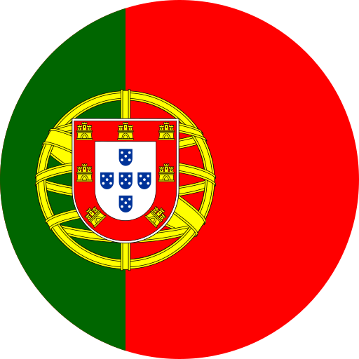
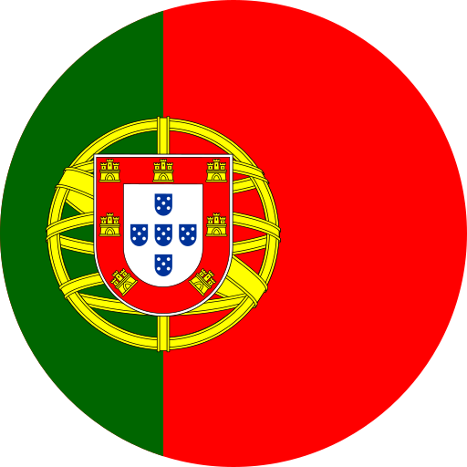
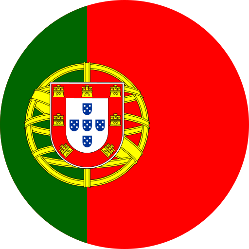

Installer

Convertisseur d'unités
Miles ➜ Kilomètres
Kilomètres ➜ Miles
Gallons ➜ Litres
Litres ➜ Gallons
Pounds ➜ Kilogrammes
Kilogrammes ➜ Pounds
Fahrenheit ➜ Celsius
Celsius ➜ Fahrenheit
Pouces ➜ Centimètres
Centimètres ➜ Pouces
Mètres ➜ Pieds
Pieds ➜ Mètres
Kilojoules ➜ Calories
Calories ➜ Kilojoules
Heures ➜ Jours
Jours ➜ Heures
Heures ➜ Secondes
Secondes ➜ Heures
Mètres carrés ➜ Pieds carrés
Pieds carrés ➜ Mètres carrés
Litres ➜ Millilitres
Millilitres ➜ Litres
Convertir
Réinitialiser
Si vous voulez convertir votre monnaie
cliquer ici


 
